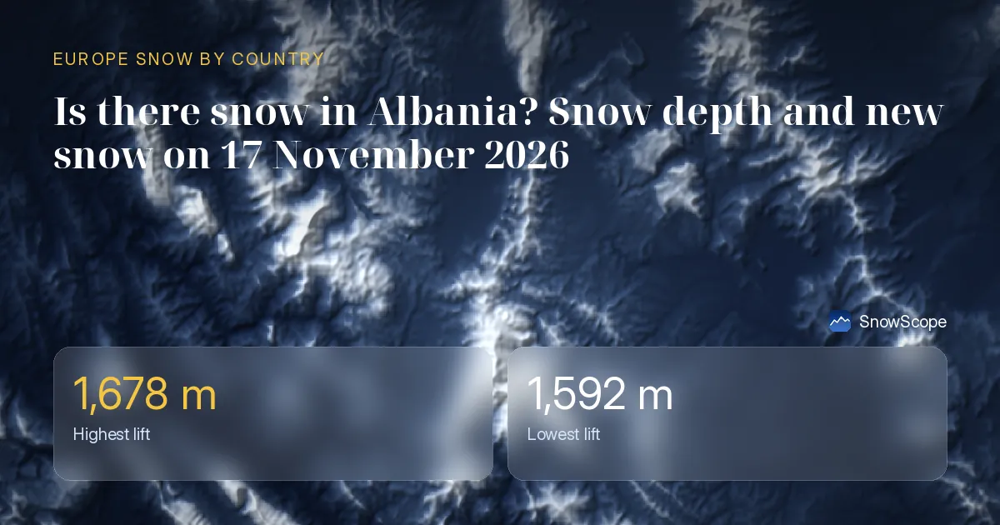

Is there snow in Albania? Snow depth and new snow on 17 November 2026
In Albania, about 60 km² of high ground is white today, down 80 km² on yesterday.
See the live snow forecast for Ski Pista Bigëll in the SnowScope appSnow depth, powder alerts and the 3D map, free.
Snow on the ground
That is close to the 30 km² of a week ago. Below about 2,200 m the slopes are mostly green or brown.
| Resort | Snow depth | New snow, 72 h | Coming, next days | Top |
|---|---|---|---|---|
| Ski Pista Bigëll | 0 cm | 0 cm | 0 cm | 1,678 m |

Snow depth by height
Height makes the difference: between 2,000 and 2,500 m, 1 cm on average, 24 % covered.
Fresh snow
The last three days were dry or nearly so, with no more than 1 cm anywhere.
Skiing conditions
The snow is retreating uphill, so plan on the higher lifts and avoid the low valley runs.
Keep an eye on the forecast: the coming snow could change the picture quickly.
Best resorts right now
The 1 resorts in Albania on our map are still green.
The next days
The week ahead could bring up to 16 cm, 1 cm of it in the next three days.
The snowiest day looks like Monday 23 November, with up to 9 cm in the snowiest spots.
Tips for skiers
- Read the local avalanche bulletin before going off-piste.
- Early-season snow is thin over rocks: ski the groomed runs first.
- Roads to the higher resorts may need winter tyres or chains.
About these numbers
Resort snow depths are the deepest snow on the resort's upper slopes from the SnowScope snow model (about 1 km, run of 17 November); they are estimates for an area, not a measurement at one point. Station values are measurements on the date shown. Forecasts can change. Always read the official avalanche bulletin before going off-piste.
Cite this report
For research, teaching or the press: the numbers and charts are free to reuse under CC BY 4.0 with this citation.
SnowScope (2026), Is there snow in Albania? Snow depth and new snow on 17 November 2026, https://snowscope.app/blog/en/2026/11/albania-snow-report-17-november-2026.html, accessed 2026-11-17
SnowScope (Atlas Labs). (2026, November 17). Is there snow in Albania? Snow depth and new snow on 17 November 2026. SnowScope snow reports. https://snowscope.app/blog/en/2026/11/albania-snow-report-17-november-2026.html
BibTeX
@misc{snowscope2026albaniasnowreport17novem,
author = {{SnowScope (Atlas Labs)}},
title = {Is there snow in Albania? Snow depth and new snow on 17 November 2026},
year = {2026},
month = nov,
howpublished = {\url{https://snowscope.app/blog/en/2026/11/albania-snow-report-17-november-2026.html}},
note = {Published 2026-11-17 13:09 UTC; accessed 2026-11-17}
}· CC BY 4.0 · Methods, data and tools →
Ski Pista Bigëll: snow and temperature by height, this winter vs last (tools) →
Follow Ski Pista Bigëll
Free: a message when fresh snow is coming, and the forecast every morning.
More snow reports

Puy-Saint-Vincent pairs a 44 EUR adult 1-day pass with solid December snow higher up, compared here with its big neighbour Serre Chevalier.

Pila above Aosta pairs a flat 60.00 EUR day pass with reliable December snow on its upper slopes.

Plan your December 2026 trip to Les Orres by matching weekly pass prices with our snow history of 46 past winters.